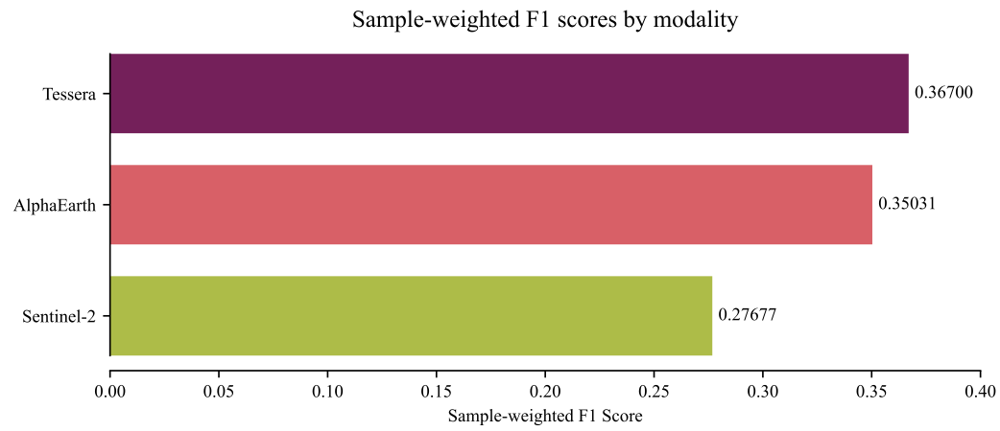

Weeknotes: 2026 Weeks 32 & 33
2026/08/01 – 2026/08/13
Much briefer note this week!
Natural England meeting
Last week we had a very fun mini-workshop in Cambridge, with three visitors from Natural England.
We’re going to be collaborating on two fronts: - We’re going to investigate using Tessera for the change detection component of Natural England’s Living England product. - Natural England will share a lot of their field survey data with us, for our own habitat mapping tasks.
The workshop covered a lot of technical details, such as their proposal for change detection, what the dataset looks like etc.
Species Distribution Modelling
#TODO: write up properly
I made some progress on the SDM benchmarking project I’ve described in recent weeknotes (e.g. 29 and 31).
One of the main things I’ve done is to migrate Tessera versions, from version 1.0 to 2.0.1 The migration proved to be a bit of a pain: I’m downloading many small patches rather than one big continuous raster, and I wanted to choose the best data format. After a few mis-steps, I settled on zarr v3. As well as a small(er) data footprint because of clever compression, the “sharding” means that pytorch can read individual patches rather than loading a whole chunk into memory.
1 With the caveat that I’m actually using an experimental version of Tessera v2.

Migrating to version 2 gives a decent bump to the sample-weighted F1 score, and now Tessera is beating AlphaEarth by a more convincing margin than last week.
I’ve also been running a wider series of experiments, the results of which I’ll post in my next note. These include:
- Testing a grid of patch sizes.
- Testing the addition of extra “environmental” layers, spatial coordinates, and Landsat time series data.2
- Testing a grid of training set sizes.
- Testing beefier and less beefy model architectures compared with my “fiducial” architecture.
2 Tessera was trained on Sentinel alone, not Landsat. So, it might be interesting to see whether Landsat has an additional information that boosts performance.
Various other projects
In addition to the above, I spent some time working on various other projects:
- As described last week: bird mapping from assemblages. Following a conversation with one of my collaborators, I had a go at migrating our bird-habitat database to a different taxonomic reference: the AviList. This proved a deep quagmire indeed: a myriad of taxonomic merges/splits and other ambiguities. In the end I decided to give up altogether: as this is a proof-of-concept project, so it shouldn’t matter too much that we use the very latest taxonomic reference.
- I’ve been working with PhD student Nina de Jong. She has a very interesting project studying long-term change in New Zealand. I’m going to be collaborating with her a little by doing some stats-crunching. So far, I’ve just been doing some exploratory data analyses with her data.
Crossword Corner
There was a fun clue in the Guardian’s Prize crossword last week (30,068, compiled by Paul). 29 across:
Really think on it, and open the door to a new basin? (3, 4, 4, 2)
Double definition: LET THAT SINK IN.